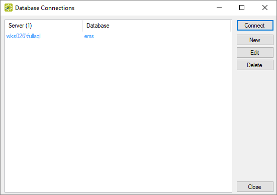

Manage Database Connections
After EMS has been installed on your desktop using the EMS Desktop Client Web Deployment, managing database connections can be done through the EMS Desktop Client using the instructions below.
Change Databases
To change databases while using EMS Desktop Client applications installed with Web Deployment, do the following:
- On the EMS Menu select File > Change Database to bring up the Database Connections window.

Note: Any database connection listed in blue is a system record inherited from the EMS Desktop Client Web Deployment that can not be deleted.
- To connect to a database that is not the system database select it from the list of Database Connections and then press the Connect button. This will close and reopen EMS Desktop Client connected to the selected database.
Note: The user will need to log in again after changing databases
Create New Database Connections
- To create a New connection select New in the Database Connections window to bring up the Database Connection window.

- Type in the SQL server and EMS database name and then select OK to save the connection. You can delete connections later when you no longer need them.
- For EMS to save this connection it will first check to see if it is a valid connection. If the connection is invalid, it will not be created and the user will receive this error message:

{kind=link}